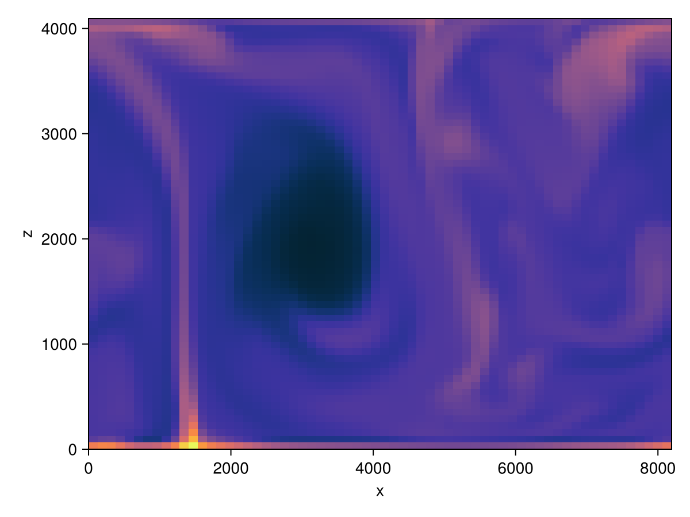

Breeze.jl
Fast and friendly Julia software for atmospheric fluid dynamics on CPUs and GPUs.
Breeze is a library for simulating atmospheric flows and weather phenomena, such as clouds and hurricanes, on both CPUs and GPUs. Built on Oceananigans, Breeze extends its grids, solvers, and advection schemes with atmospheric dynamics, thermodynamics, microphysics, and radiation.
Learn more in the examples or get in touch on the NumericalEarth Slack or GitHub discussions.
Features
- Anelastic dynamics with a pressure Poisson solver that filters sound waves
- Compressible dynamics with split-explicit acoustic substepping (horizontally explicit, vertically implicit) using SSP-RK3 or Wicker-Skamarock RK3
- Moist thermodynamics with liquid-ice potential temperature and static energy formulations
- Cloud microphysics: saturation adjustment, Kessler, one- and two-moment bulk schemes via CloudMicrophysics.jl
- Radiative transfer: gray, clear-sky, and all-sky solvers via RRTMGP.jl
- High-order advection including bounds-preserving WENO schemes
- LES turbulence closures for subgrid-scale mixing
- Surface physics: Coriolis forces, bulk drag, heat and moisture fluxes
- Kinematic driver and parcel model for rapid prototyping of microphysics and radiation schemes
- GPU-first: use
GPU()to run very fast on NVIDIA GPUs
Roadmap and a call to action
Our goal is to build a very fast, easy-to-learn, productive tool for atmospheric research, teaching, and forecasting, as well as a platform for the development of algorithms, numerical methods, parameterizations, microphysical schemes, and atmosphere model components. This goal can't be achieved by the efforts of a single group, project, or even a single community. Such a lofty aim can only be realized by a wide-ranging and sustained collaboration of passionate people. Maybe that includes you - consider it! Model development is hard but rewarding, and builds useful skills for a myriad of pursuits.
The goals of the current group of model developers include developing
- Advanced microphysics: Predicted Particle Property (P3) bulk microphysics, spectral bin schemes, and Lagrangian superdroplet methods for high-fidelity cloud and precipitation modeling.
- Terrain-following coordinates: Smooth sigma coordinates for flow over complex topography
- Open boundaries and nesting: Open boundary conditions are useful for both idealized simulations and realistic one- and two-way nested simulations for high-resolution downscaling.
- Coupled atmosphere-ocean simulations: Support for high-resolution coupled atmosphere-ocean simulations via NumericalEarth.jl.
If you have ideas, dreams, or criticisms that can make Breeze and its future better, don't hesitate to speak up by opening issues and contributing pull requests.
Installation
Breeze is a registered Julia package. First install Julia; suggested version 1.12. See juliaup README for how to install 1.12 and make that version the default.
Then launch Julia and type
julia> using Pkgjulia> Pkg.add("Breeze")If you want to live on the cutting edge, you can use
Pkg.add(; url="https://github.com/NumericalEarth/Breeze.jl.git", rev="main")to install from main. For more information, see the Pkg.jl documentation.
Quick Start
A basic free convection simulation with an AtmosphereModel:
using Breezeusing Oceananigans.Unitsusing CairoMakieusing Random: seed!# Fix the seed to generate the noise, for reproducible simulations.# You can try different seeds to explore different noise patterns.seed!(42)Nx = Nz = 64Lz = 4 * 1024grid = RectilinearGrid(size=(Nx, Nz), x=(0, 2Lz), z=(0, Lz), topology=(Periodic, Flat, Bounded))p₀, θ₀ = 1e5, 288 # reference state parametersreference_state = ReferenceState(grid, surface_pressure=p₀, potential_temperature=θ₀)dynamics = AnelasticDynamics(reference_state)Q₀ = 1000 # heat flux in W / m²ρs_bcs = FieldBoundaryConditions(bottom=FluxBoundaryCondition(Q₀))ρqᵛ_bcs = FieldBoundaryConditions(bottom=FluxBoundaryCondition(1e-2))advection = WENO()model = AtmosphereModel(grid; advection, dynamics, boundary_conditions = (ρs=ρs_bcs, ρqᵛ=ρqᵛ_bcs))Δθ = 2 # ᵒKTₛ = reference_state.potential_temperature # Kθᵢ(x, z) = Tₛ + Δθ * z / grid.Lz + 2e-2 * Δθ * (rand() - 0.5)set!(model, θ=θᵢ)simulation = Simulation(model, Δt=10, stop_time=2hours)conjure_time_step_wizard!(simulation, cfl=0.7)run!(simulation)heatmap(PotentialTemperature(model), colormap=:thermal)
Due to their chaotic nature, even the smallest numerical differences can cause nonlinear systems, such as atmospheric models, not to be reproducible on different systems, therefore the figures you will get by running the simulations in this manual may not match the figures shown here. For more information about this, see the section about reproducibility.
Relationship to Oceananigans
Breeze is built on Oceananigans.jl, an ocean modeling package that provides grids, fields, operators, advection schemes, time-steppers, turbulence closures, and output infrastructure. Breeze extends Oceananigans with atmospheric dynamics, thermodynamics, microphysics, and radiation to create a complete atmosphere simulation capability. The two packages share a common philosophy: fast, flexible, GPU-native Julia code with a user interface designed for productivity and experimentation. To learn these foundational components of Breeze, please see the Oceananigans documentation.
If you're familiar with Oceananigans, you'll feel right at home with Breeze. If you're new to both, Breeze is a great entry point—and the skills you develop transfer directly to ocean and climate modeling with Oceananigans and ClimaOcean.jl.
Citing
If you use Breeze for research, teaching, or fun, we'd be grateful if you give credit by citing the corresponding Zenodo record, e.g.,
Wagner, G. L. et al. (2026). NumericalEarth/Breeze.jl. Zenodo. DOI:10.5281/zenodo.18050353